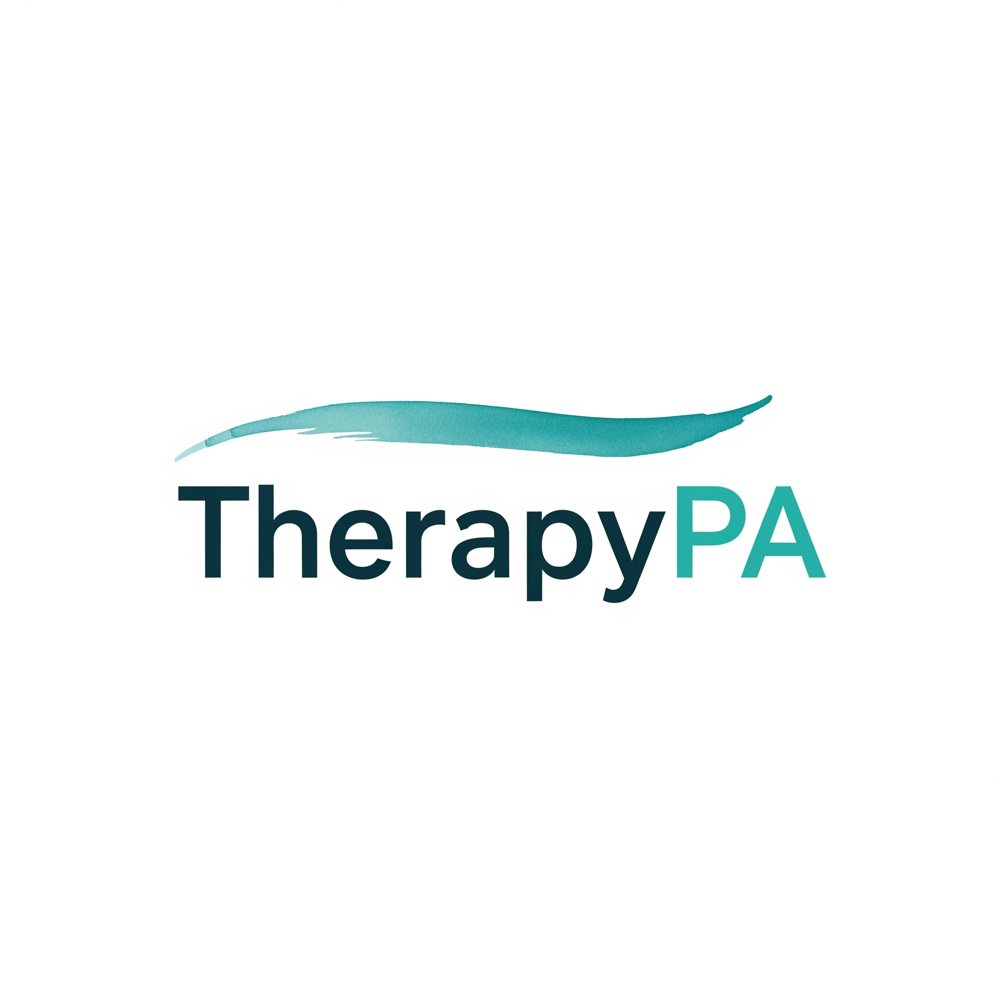

Understanding your patterns
My foundation is psychodynamic therapy. We explore how your experiences and relationships shape the ways you feel, connect, and respond today, with curiosity about patterns that may be difficult to see on your own.

Bill Curtin, LCSW · Virtual therapy in Pennsylvania
Maybe something hurts, something’s stuck, or life just feels difficult. You don’t need the right words yet. We’ll start with what’s bringing you in.
Request a free 20-minute consultationFree 20-minute consultation · Online therapy for adults in Pennsylvania.
Now credentialing with Independence Blue Cross (IBX). Have an IBX plan? Book a free consultation and mention IBX to join the waitlist.
Beginning where you are
You may be considering therapy because of a specific concern, a difficult transition, or a pattern you feel ready to change. We can begin with what is troubling you now, while making room to explore the experiences, relationships, and feelings that shape your life.
Together, we can work toward greater self-understanding, more freedom in how you respond to familiar challenges, and a clearer sense of what makes life meaningful to you.
My approach
My foundation is psychodynamic therapy. We explore how your experiences and relationships shape the ways you feel, connect, and respond today, with curiosity about patterns that may be difficult to see on your own.
I also draw on my training in cognitive behavioral therapy, or CBT. Practical tools can help us examine thoughts and behaviors and work with the concerns that brought you to therapy.
Alongside addressing immediate difficulties, there is space to explore meaning, relationships, and the choices that could help you live more fully. Your priorities help guide our work.
Areas of support
When loss comes with trauma (a sudden death, a violent loss, grief tangled up with what happened), the mourning needs room, and so does the shock. I work with people carrying both.
From the outside it looks like success. Inside it feels like running on empty with no permission to stop. I work with high achievers who are burning out and want a different relationship with work, ambition, and rest.
A lot of men were never given much language for what’s happening inside. Therapy can be a place to build that language, without judgment and without having to perform being fine.
Police, fire, EMS, dispatch: the job asks you to absorb what most people never see. I spent a decade in the victim services field and community behavioral health. I understand the culture and the cost.
Racing thoughts, dread that won’t lift, the flat gray of depression. Practical tools and deeper understanding, together. Not one or the other.
Trauma-informed care including Cognitive Processing Therapy (CPT), structured, evidence-based work for when the past won’t stay in the past.
Why TherapyPA
I’m certified in psychodynamic psychotherapy and CBT, and trained in CPT for trauma. We get to what matters, and every session leaves you with something concrete.
Before private practice, I spent a decade in the victim services field and community behavioral health. That work taught me what it means to sit with people during the worst moments of their lives, and it’s the foundation of how I practice now.
This isn’t a six-session program. It’s a therapeutic relationship built over time, aimed at lasting change. Not just symptom management.
Right now I am private pay, so no insurer ever sees a diagnosis or a treatment note from our work, and nothing goes to an employer. When IBX credentialing clears, private-pay sessions will stay exactly this private.
About Bill
I’m Bill Curtin, a licensed clinical social worker based in Philadelphia. I work with adults through online therapy in Pennsylvania.
I hold a Master of Social Work from the University of Pennsylvania and am a Licensed Clinical Social Worker in Pennsylvania (license CW025367, current through February 28, 2027). My experience includes outpatient community mental health, victim services, and group practice work.
I am trained in both psychodynamic clinical work and Cognitive Behavioral Therapy (CBT). I’m interested in helping you understand yourself on a fundamental level, while attending to the problems you want help with today.
Questions
For self-pay, it is $200 per session. Payment is by credit or debit card through the secure client portal, or by Venmo. Depending on availability, I may be able to offer a reduced fee based on financial need.
Yes. A free 20-minute consultation so we can see if we’re a good fit. We’ll talk about what brings you in, any questions you have, and what working together would look like.
All sessions are held online through secure telehealth, for adults located in Pennsylvania.
Not yet. I am currently credentialing with Independence Blue Cross (IBX) for in-network therapy. Until credentialing clears, sessions are private pay. I provide superbills (a detailed receipt) you can submit to your insurer for out-of-network reimbursement.
You pay me directly. I provide a superbill on request. You submit it to your insurance company. Your insurance may reimburse part of the cost.
You will have to call your insurance company and ask the following questions:
No. For routine outpatient therapy with IBX plans, no referral or preauthorization is needed. I verify your benefits before we begin so there are no surprises.
We’ll talk about what brings you in, what you want to be different, and how we might work together. There’s no pressure to have it all figured out. Beginning where you are is the whole point.
Please give at least 24 hours’ notice if you need to cancel or reschedule. Late cancellations and missed sessions are charged the full fee, except in true emergencies.
Getting started
I offer a free 20-minute consultation so we can see if we’re a good fit. Sessions are held online through secure telehealth, for adults located in Pennsylvania. I am now credentialing with Independence Blue Cross (IBX). If you have an IBX plan and want to be first in line when in-network sessions begin, book a free consultation and mention IBX.
Book your free consultationPick a time that works for you. You’ll get a confirmation right away.